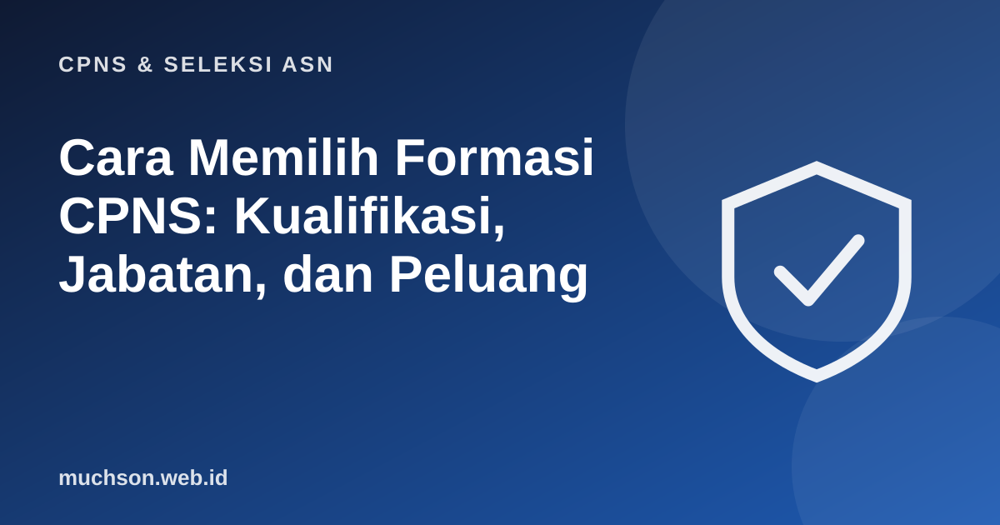

Beranda › Artikel › CPNS & Seleksi ASN
CPNS & Seleksi ASNCara Memilih Formasi CPNS: Kualifikasi, Jabatan, dan Peluang
Memilih formasi adalah keputusan terbesar sebelum tes dimulai, dan tidak bisa diulang dalam tahun anggaran yang sama: Anda hanya boleh melamar satu jenis pengadaan, satu instansi, dan satu jabatan. Berikut cara membaca struktur formasi dari aturan resmi dan membandingkan pilihan dengan data, bukan perasaan.

Mengenal struktur formasi
Pasal 5 PermenPANRB 6/2024 membagi pengadaan menjadi PNS dan PPPK, yang masing-masing berlaku untuk Jabatan Fungsional (JF) dan Jabatan Pelaksana. Pengadaan secara nasional dilakukan untuk jabatan pelaksana serta JF jenjang pemula, terampil, ahli pertama, dan ahli muda (Pasal 7 ayat 2), sedangkan pengadaan tingkat instansi dilakukan untuk mengisi kebutuhan PPPK pada JF (Pasal 7 ayat 4). Kebutuhan ditetapkan lewat keputusan menteri, baik penetapan kebutuhan umum maupun khusus (Pasal 8).
Deskripsi teks diagram
- Jenis pengadaan: PNS atau PPPK, hanya satu per tahun anggaran
- Instansi: pusat atau daerah, hanya satu
- Jenis jabatan: fungsional atau pelaksana, hanya satu jabatan
- Kualifikasi dan penempatan: pendidikan, sertifikasi, dan unit kerja yang tertulis di pengumuman
Per 17 November 2026 akun SSCASN sudah dibuka tetapi formasi dan jadwal pendaftaran belum diumumkan resmi. Gunakan artikel ini untuk menyiapkan kriteria memilih, lalu terapkan begitu daftar formasi terbit.
Informasi yang wajib ada di pengumuman lowongan
Pengumuman lowongan dilakukan paling singkat selama 15 hari kalender (Pasal 21 ayat 3) dan paling sedikit memuat hal berikut (ayat 4). Daftar ini adalah daftar periksa terbaik untuk membandingkan jabatan.
| Informasi | Kenapa penting bagi Anda |
|---|---|
| Jenis pengadaan dan nama jabatan | Memastikan PNS atau PPPK, dan jabatan yang dilamar |
| Jumlah lowongan jabatan | Menentukan batas peringkat SKD (3 kali kebutuhan) |
| Unit kerja penempatan | Lokasi kerja dan kesiapan ditempatkan |
| Kualifikasi pendidikan atau sertifikasi | Menentukan kelayakan administratif |
| Rentang penghasilan per jabatan | Perkiraan penghasilan yang tertulis resmi |
| Deskripsi jabatan | Gambaran tugas dan isi materi SKB |
| Jadwal tahapan seleksi | Merencanakan waktu belajar dan tes |
| Syarat pelamar dan tata cara pendaftaran | Menghindari gugur administrasi |
| Layanan bantuan dan media sosial resmi | Sumber kabar yang sah |
Faktor yang perlu dipertimbangkan
- Kualifikasi. Wajib sesuai persyaratan jabatan (Pasal 23 ayat 1 huruf g). Jika tidak sesuai, lamaran berisiko tidak lulus administrasi.
- Jumlah lowongan. Peserta yang lulus SKD paling banyak 3 kali kebutuhan jabatan. Jabatan dengan lowongan sedikit memiliki jalur sempit meski pelamarnya tidak banyak.
- Penempatan. Pelamar harus bersedia ditempatkan di seluruh wilayah NKRI (Pasal 23 ayat 1 huruf j), dan pelamar PNS menandatangani pernyataan tidak pindah dengan alasan pribadi paling singkat 10 tahun (Pasal 59 ayat 2).
- Penghasilan. Lihat rentang yang diumumkan dan telaah tunjangan instansi (artikel gaji dan tunjangan).
- Kecocokan tugas. Baca deskripsi jabatan. Anda akan bekerja bertahun-tahun di sana.
- Persyaratan khusus. Sertifikasi, kesehatan, atau tes tambahan yang bisa menjadi hambatan atau keunggulan.
Menilai pilihan dengan matriks sederhana
Beri skor 1 sampai 5 pada tiap faktor untuk tiap jabatan yang Anda pertimbangkan, lalu hitung nilai berbobot. Bobotnya milik Anda sendiri. Contoh di bawah menunjukkan cara kerjanya dengan dua jabatan fiktif.
Setelah memilih formasi, ukur kesiapan SKD Anda dengan tryout SKD gratis di LolosSeleksi. Rapor per subtes membantu menilai seberapa kompetitif Anda pada jabatan pilihan.
Tanya jawab
Berapa jabatan yang boleh dilamar?
Apa bedanya jabatan fungsional dan jabatan pelaksana?
Di mana melihat rentang penghasilan jabatan?
Berapa lama pengumuman lowongan dibuka?
Apakah boleh pindah instansi setelah jadi PNS?
Referensi
- Peraturan Menteri PANRB Nomor 6 Tahun 2024 tentang Pengadaan Pegawai ASN (teks resmi, BKN) (membuka tab baru)
- Peraturan Menteri PANRB 6/2024, status berlaku dan mencabut Permen 27/2021 (peraturan.bpk.go.id) (membuka tab baru)
- Kompas.com, 16 November 2026: registrasi akun SSCASN CPNS 2026 dibuka, jadwal pendaftaran belum diumumkan (membuka tab baru)